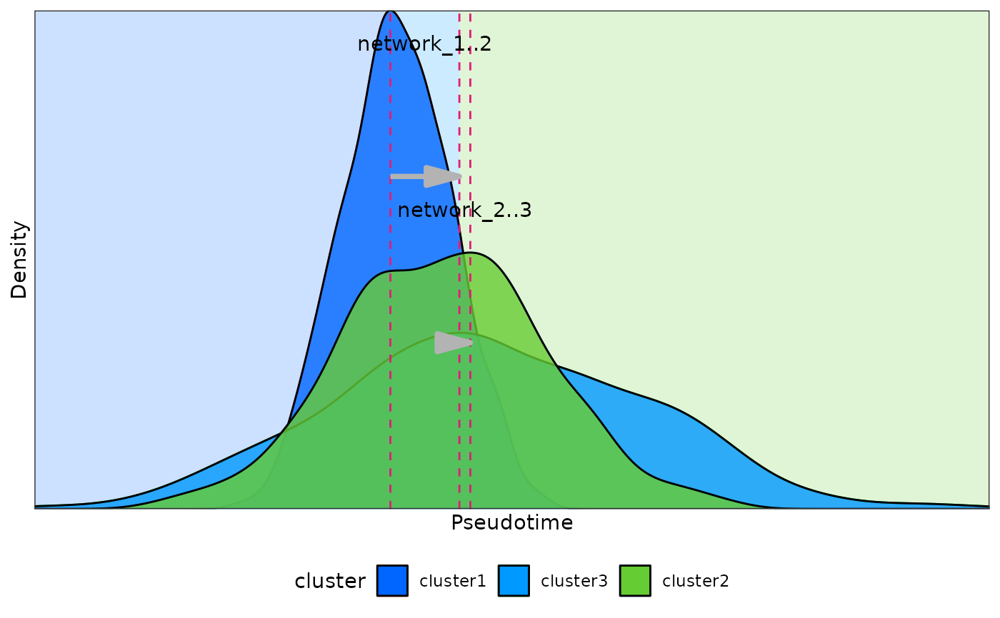
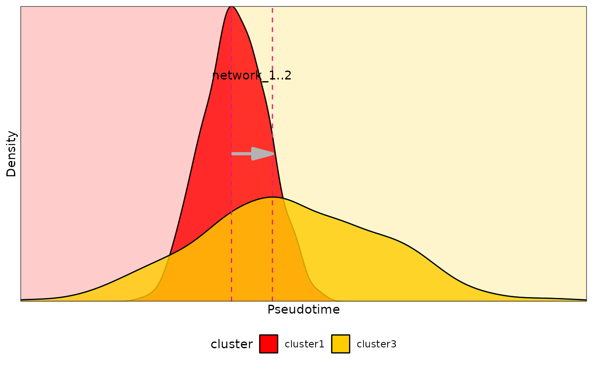

density_points
density_points(
meta_data,
cluster_list = NULL,
method = "combine",
cluster_by = NULL,
group_column = "cluster",
pseudotime_column = "pseudotime",
min_cells = 100,
plot = FALSE,
key_word = "network_",
key_sign = "..",
file_save = NULL,
color_list = c("#0066ff", "#0099ff", "#66cc33", "#66ff33", "#ccff00", "#ffff99",
"#ffff33", "#ffcc33", "#ff9933", "#ff6633", "#cc3300", "#ff3333")
)meta_data
cluster_list
method
cluster_by
group_column
pseudotime_column
min_cells
plot
key_word
key_sign
file_save
color_list
points
test_data <- rbind(
data.frame(
cluster = "cluster1",
pseudotime = rnorm(500, mean = 1, sd = 1)
),
data.frame(
cluster = "cluster2",
pseudotime = rnorm(500, mean = 2, sd = 2)
),
data.frame(
cluster = "cluster3",
pseudotime = rnorm(500, mean = 3, sd = 3)
)
)
density_points(
meta_data = test_data,
plot = TRUE
)

#> window cluster1 cluster2 time_point1 time_point2
#> 1 network_1 cluster1 cluster2 0.8190219 1.773083
#> 2 network_2 cluster2 cluster3 1.7730828 3.893550
density_points(
meta_data = test_data,
cluster_list = list(c("cluster1", "cluster3")),
plot = TRUE,
color_list = c("#ff0000", "#ffcc00")
)

#> window cluster1 cluster2 time_point1 time_point2
#> 1 network_1 cluster1 cluster3 0.8190219 3.89355
density_points(
meta_data = test_data,
method = "intersection",
plot = TRUE
)
#> window cluster1 cluster2 time_point1 time_point2
#> 1 network_1 cluster1 cluster3 -5.465397 3.847519
#> 2 network_2 cluster1 cluster3 2.261888 12.291692